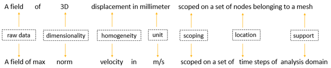
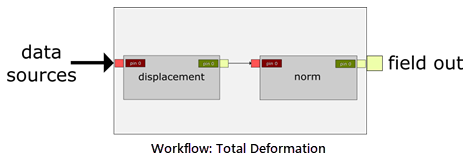

Concepts and Terminology#
DPF sees fields of data, not physical results, making it a very versatile
tool that can be used in a variety of ways across teams, projects,
and simulations.
The data source is one or more files in which analysis results can be found.
A field is the main simulation data container. For transient/harmonic/modal or multi-step static analyses, a field container is used to hold a set of fields (one field for each time step, each frequency).
The physical entity with which the field is associated is called
the support. For example, the support can be a mesh,
geometrical entity, or time or frequency values.
In most cases you will not want to work with the entire set of data, but rather a subset of that data. To achieve this you define scoping. Scoping is a subset of the model’s support. Typically, scoping can represent node IDs, element IDs, time steps, frequencies, joints, and so on. Scoping describes a spatial and/or temporal subset on which the field is scoped.
In DPF, field data is always associated with its scoping and support, making the field a self-describing piece of data. For example, in a field of nodal displacement, the displacement is the simulation data and the associated nodes are the scoping. A field can also be defined by its dimensionality, unit of data, and location.
The location is the type of topology associated with the data container.
DPF uses three different spatial locations for finite element data: Nodal,
Elemental, and ElementalNodal. A Nodal location describes data computed
on the nodes, while an Elemental location describes data computed on the
element itself. These nodes and elements are identified by an ID — typically
a node or element number. An ElementalNodal location describes data
defined on the nodes of the elements, but you must use the Element ID to
retrieve it. To achieve this you define Elemental scoping or Nodal scoping.
The following example summarizes the concepts above:
Operators are the only object used to create and transform the data. An operator is composed of a “core” that handles the calculation, and input and output “pins” (think of an integrated circuit in electronics). These pins enable you to provide input data to each operator. When the operator is evaluated, it processes the input information to compute its output.

Operators can be chained together to create workflows. A workflow is a global entity that you use to evaluate the data produced by the operators. It needs input information and computes the requested output information.
Think of a workflow as a black box in which some operators are chained, computing the information for which it is made:

The following example shows operators that have been chained together to create a total deformation workflow:
This workflow can be used in any simulation workflow using any data source as input.